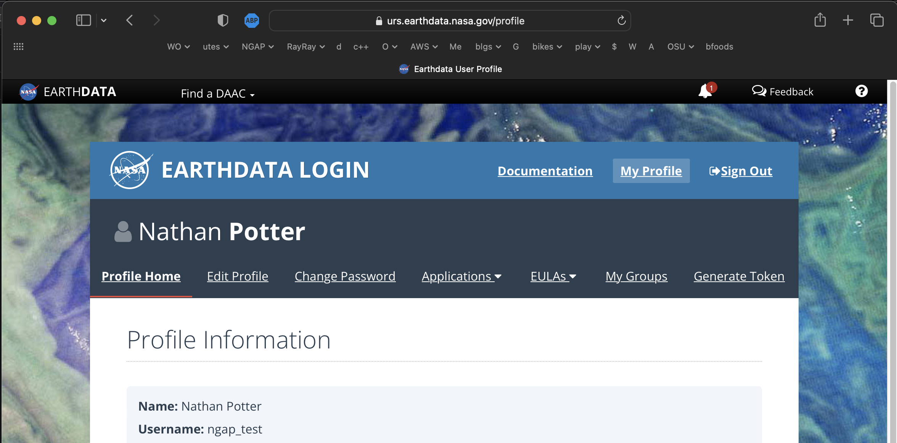
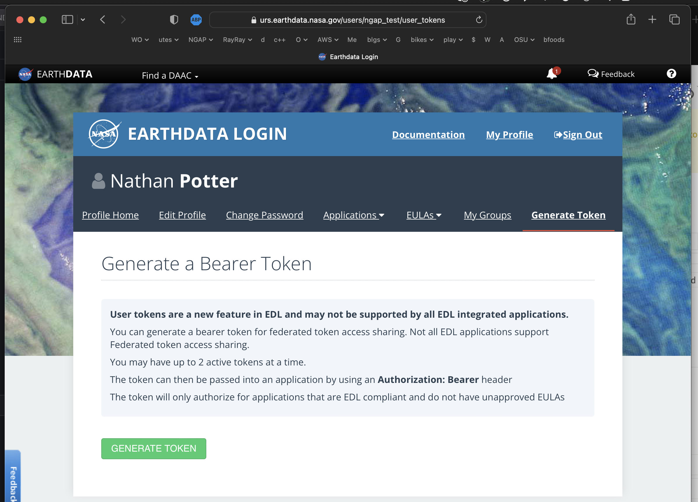
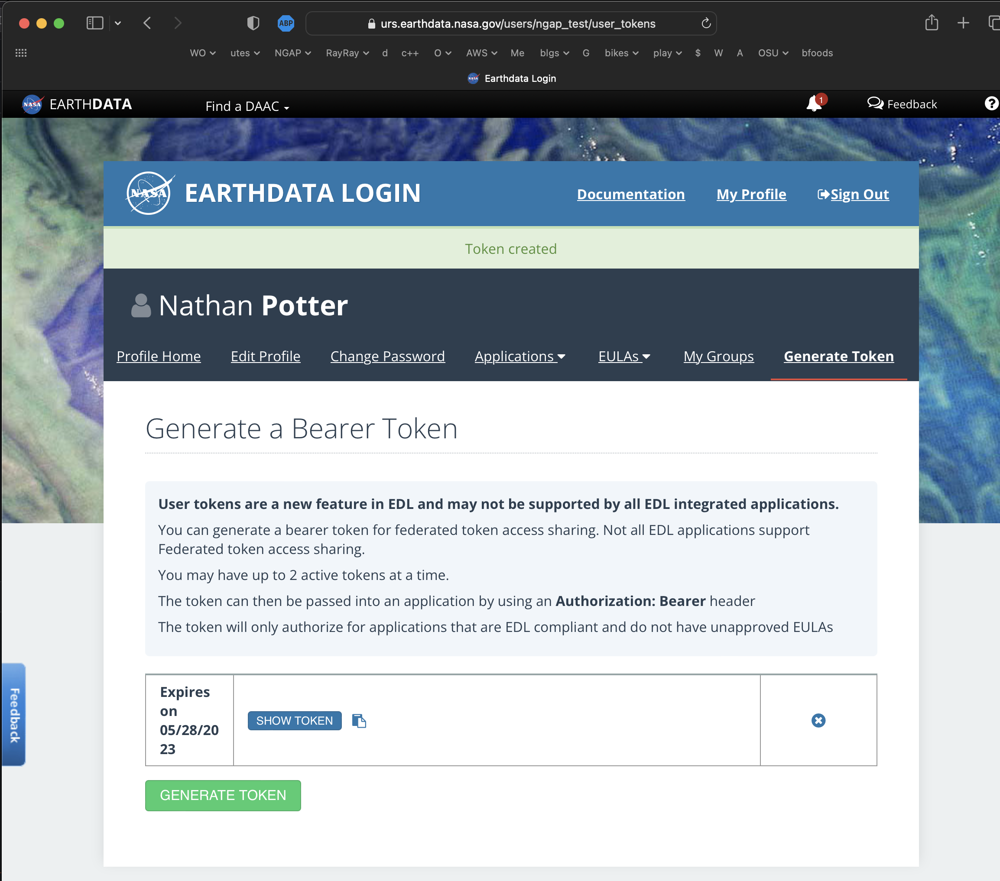

1. Overview
Using EDL tokens for authentication is usually straight forward when the software making the requests has an API/UI that allows the injection of an HTTP request header. All the data access clients that we have been tested with EDL authentication have been working because the EDL authentication endpoints support the most fundamental type of web authentication, HTTP BASIC.
The introduction of EDL tokens means a move away from HTTP BASIC authentication
and into something new. Some very flexible clients like cURL and wget can
easily adapt to the change in authentication procedure by simply taking an EDL
token and submitting it as part of an Authorization request header.
Other data access client software have no API or UI through which an EDL token might be introduced and used in an authorization header.
|
Note
|
Recent changes in the way that the Hyrax DAP service utilizes EDL tokens means that clients are no longer required to follow redirects or maintain session state by managing cookies. However, maintaining session state (managing cookies) will produce better request performance when your client is making multiple requests of the service. If a session is not maintained by the requesting client the service will validate the EDL token each time a request is made. This may add 500ms - 2000ms to every request/response cycle. |
2. Acquire an EDL token from the EDL service
This is an activity that you must do by hand, with a browser.
-
Point you browser here: https://urs.earthdata.nasa.gov/profile 
-
Click the
Generate Tokenlink. -
Now you should be at the
Generate a Bearer Tokenpage  -
Click the big green
Generate Tokenbutton. -
Consider the resulting page: 
Copy the token into your clipboard and save it in a local file for safe keeping.
Also, for the purposes of this guide, make a file called edl_token_auth.hdr and
in the file put this line:
Authorization: Bearer TOKEN_VALUE
3. Clients that work with EDL tokens
(Some shimming required)
3.1. curl (Command line cURL)
Recent changes in the way that the Hyrax service utilizes EDL tokens means that the clients are no longer required to follow redirects or maintain session state by managing cookies.
Here are two examples with command line cURL. One that uses EDL tokens and maintains sessions and a second that uses only the EDL
3.1.1. cURL with EDL Token and session cookies.
You can utilize your EDL token with a commandline cURL request that will maintain a session so that subsequent requests will be serviced more quickly.
#!/bin/bash
# cURL example, uses sessions, no redirects.
#
export url="https://opendap.earthdata.nasa.gov/hyrax/data/nc/fnoc1.nc.dds"
echo "url: ${url}" >&2
# Load the EDL token file contents into the shell variable 'auth_hdr'
export auth_hdr=$(cat edl_token_auth.hdr)
echo "auth_hdr: ${auth_hdr}" >&2
curl -c ~/cookie_file -b ~/cookie_file -H "${auth_hdr}" "${url}"What is happening here?
-c cookie_file-
This tells cURL to stash cookies in the file cookie_file
-b cookie_file-
This tells cURL to read cookies from the file cookie_file
-H"${auth_hdr}"-
The -H option adds its parameter value as a request header in the HTTP request sent to the origin server,
${url}in the example above. Because the Authorization header contains space characters, the double quotes around the value required. ${url}-
The URL to dereference and retrieve.
|
Note
|
The client need not follow redirects (-L) for the Hyrax DAP service. With
other servers ymmv.
|
3.1.2. cURL with only the EDL Token.
You can utilize your EDL token with a command line cURL request without maintaining sessions.
#!/bin/bash
# cURL example, no session, no redirects.
#
export url="https://opendap.earthdata.nasa.gov/hyrax/data/nc/fnoc1.nc.dds"
echo "url: ${url}" >&2
# Load the EDL token file contents into the shell variable 'auth_hdr'
export auth_hdr=$(cat edl_token_auth.hdr)
echo "auth_hdr: ${auth_hdr}" >&2
curl -H "${auth_hdr}" "${url}"What is happening here?
-H"${auth_hdr}"-
The -H option adds its parameter value as a request header in the HTTP request sent to the origin server,
${url}in the example above. Because the Authorization header contains space characters, the double quotes around the value are a must. ${url}-
The URL to dereference and retrieve.
|
Note
|
The client need not follow redirects (-L) for the Hyrax DAP service. With
other servers ymmv.
|
3.2. wget
In this example we will also utilize the edl_token_auth.hdr file that we
created earlier. And, like in the cURL example there will be two examples, one
in which wget maintains a session using cookies, and one where it does not. And,
as with cURL, the maintaining a session will provide better performance on
subsequent requests.
3.2.1. wget with EDL Token and a session.
Consider this wget command:
#!/bin/bash
export url="https://opendap.earthdata.nasa.gov/hyrax/data/nc/fnoc1.nc.das"
echo "url: ${url}" >&2
export auth_hdr=$(cat edl_token_auth.hdr)
echo "auth_hdr: ${auth_hdr}" >&2
wget --load-cookies cookie_file --save-cookies cookie_file --keep-session-cookie --header="${auth_hdr}" "${url}"What’s happening with wget here?
--load-cookies cookies-
Load cookies from the file "cookie_file"
--save-cookies cookies-
Save cookies to the file "cookie_file"
--keep-session-cookie-
Save session cookies.
--header "${auth_hdr}"-
Send the value of the environment variable
auth_hdralong with the rest of the headers in each HTTP request. The supplied header is sent as-is, which means it must contain name and value separated by colon, and must not contain newlines. ${url}-
The URL to retrieve, in this case https://opendap.earthdata.nasa.gov/hyrax/data/nc/fnoc1.nc.das
3.2.2. wget with only the EDL Token.
Consider this wget command:
#!/bin/bash
export url="https://opendap.earthdata.nasa.gov/hyrax/data/nc/fnoc1.nc.das"
echo "url: ${url}" >&2
export auth_hdr=$(cat edl_token_auth.hdr)
echo "auth_hdr: ${auth_hdr}" >&2
wget --header="${auth_hdr}" "${url}"What’s happening with wget here?
--header "${auth_hdr}"-
Send the value of the environment variable
auth_hdralong with the rest of the headers in each HTTP request. The supplied header is sent as-is, which means it must contain name and value separated by colon, and must not contain newlines. ${url}-
The URL to retrieve, in this case https://opendap.earthdata.nasa.gov/hyrax/data/nc/fnoc1.nc.das
3.3. PyDAP
- Summary
-
Because PyDAP allows the programmer to inject a Session object with customized request headers it is pretty straight forward to utilize an EDL token when making requests.
# Importing the star of our show, PyDAP!
import pydap
print ("dataset_url: ", dataset_url)
# This gets the EDL token from the users keyboard.
edl_token=input("EDL Token Value: ")
print("EDL Token: ", edl_token);
auth_hdr="Bearer "+edl_token
print("auth_hdr: ", auth_hdr);
# PyDAP accepts a Session, so we make a Session and give it the Authorization
# header:
my_session = requests.Session()
my_session.headers={"Authorization": auth_hdr}
pd_dataset = pydap.client.open_url(dataset_url, session=my_session, protocol="dap4")If you want to see it in action, you can go to PyDAP’s static documentation and navigate to Basic Authentication under Examples. Other Example notebooks can further illustrate workflows starting with Token-based authentication.
4. Clients that do not work with EDL tokens
4.1. ncdump, nccopy, Matlab, and other applications that use NetCDF-C
Neither of the usage statements from nccopy and ncdump contain any mention
of submitting arbitrary headers, or authorization headers through their
published command line interface.
We may need to make a request to UNIDATA to add a request header injection UI to the NetCDF tools because until this is resolved existing NetCDF client will be able to work with EDL tokens.
4.2. Panoply, ToolsUI, Integrated Data Viewer (IDV)
None of these GUI driven data access clients contain a GUI component that allows the user to either submit an authorization header or EDL token value. Nor do they have a mechanism through which a user may identify an authorization header or token file. Until these applications GUIs or their configuration interface have been changed to utilize tokens these applications will be unable to authenticate with EDL without using HTTP BASIC authentication (including an expected 401 response from the EDL endpoint) and traditional credentials.